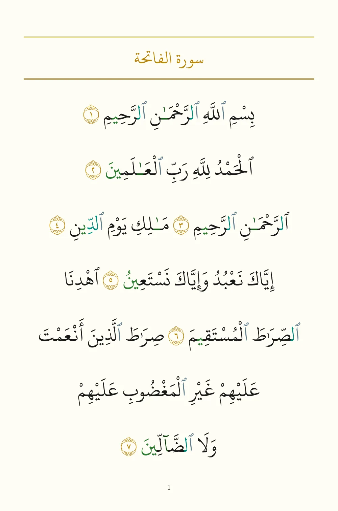
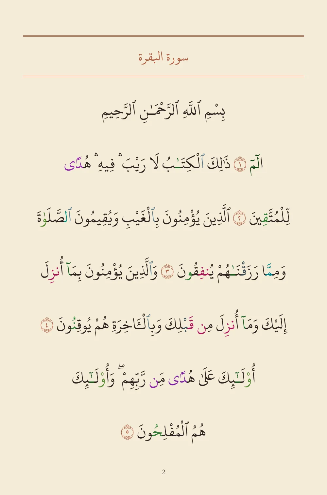
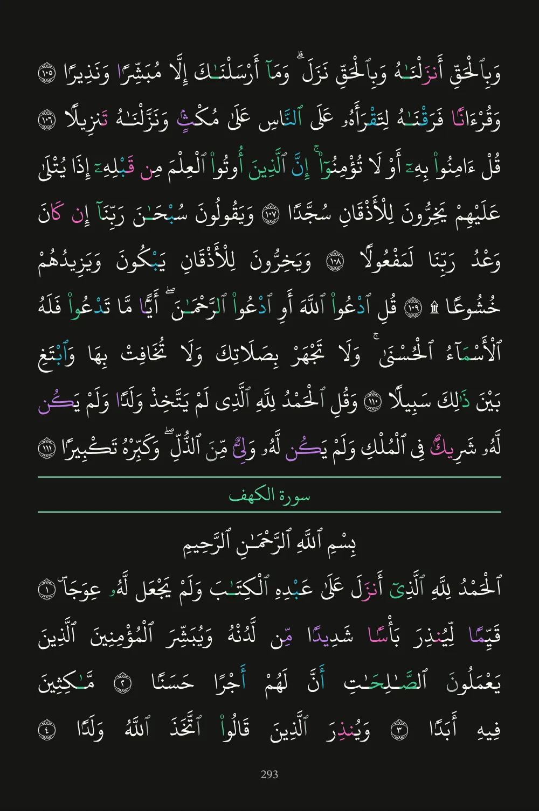
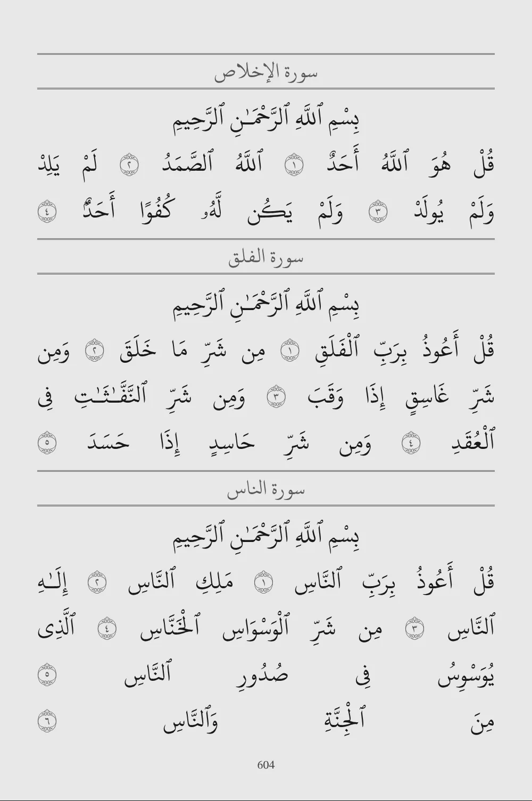

All 604 pages




Each page keeps its printed lines, so you find every ayah where you memorized it.
Recite from memory
Read on the paper you like.
The app has four papers. Night keeps the tajweed colours bright on a dark page for reading after Isha.
Hide the words, keep the ayah markers.
Hifz mode empties the page but leaves every ayah number where it is printed, so you always know which ayah you are in.
Words come back as you say them.
In the app, Qari listens and brings back the words it hears, in order. It checks which words you said, not your pronunciation or tajweed. Here, you play the reciter.
See each tajweed rule in colour.
A rule colours exactly the letters it covers: ghunnah, ikhfa, idgham, iqlab, qalqalah and the madd lengths, each in its own shade.
Every grade names its scholar
The Library shows hadith with the grades scholars gave them, never a grade made up by software, and follows each chain narrator by narrator to Ibn Hajar's rulings in Taqrib al-Tahdhib.
مِفْتَاحُ الْجَنَّةِ الصَّلاَةُ وَمِفْتَاحُ الصَّلاَةِ الْوُضُوءُ
“The key to Paradise is Salat, and the key to Salat is Wudu.”
| Grade | Ahmad Muhammad Shakir | Sahih li-ghayrihi |
|---|---|---|
| Al-Albani | Sahih | |
| Zubair 'Ali Za'i | Da'if | |
| Chain | Al-Husayn ibn Muhammad | ثقة |
| Sulayman ibn Qarm | سيء الحفظ يتشيع | |
| Abu Yahya al-Qattat | لين الحديث | |
| Mujahid ibn Jabr | ثقة إمام في التفسير وفي العلم | |
| Jabir ibn 'Abdillah | Companion |
Narrator rulings quoted from Taqrib al-Tahdhib, nos. 1345, 2600, 8444 and 6481. The two weak narrators are why one scholar grades the chain da'if.
- Android
- English, Urdu and Arabic
- Free, with no ads
One who recites
Qari means one who recites. It shares its root with iqra, the first word revealed, and with the word Quran itself. The app is built around that work: reading the Mushaf every day, holding it in memory, and understanding what you recite.
Learn has three tracks: reading Arabic from the letters and vowel marks, Quranic grammar, and levels of the Quran's most frequent words that show how much of it you can now recognise. Flashcards return on a spaced schedule, and the root explorer gathers the words that share three letters.
Download Qari
Qari is free and has no ads. Download Qari for Android and the whole Mushaf is on your phone.
Version 1.0.49.
Reading works offline; listening to your recitation needs the Qari server.